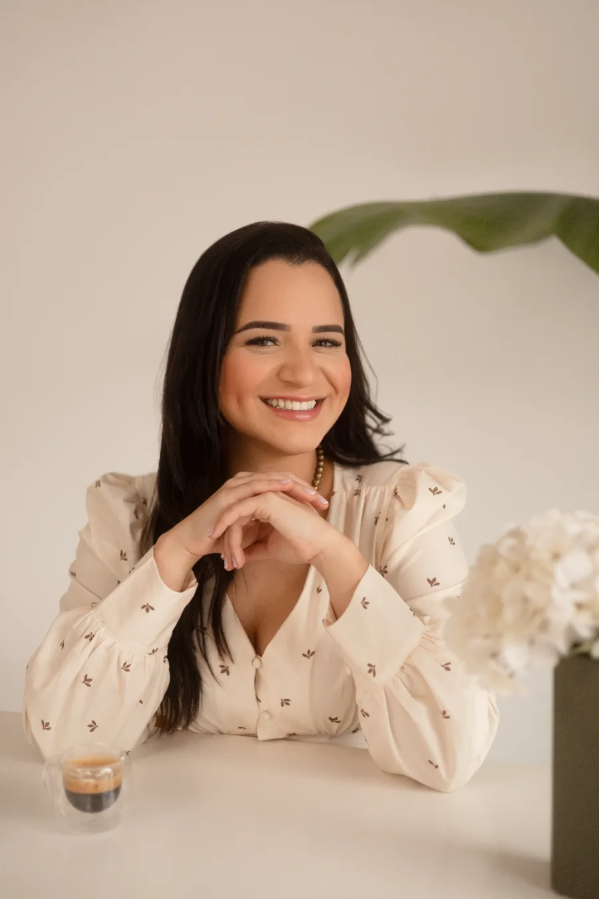
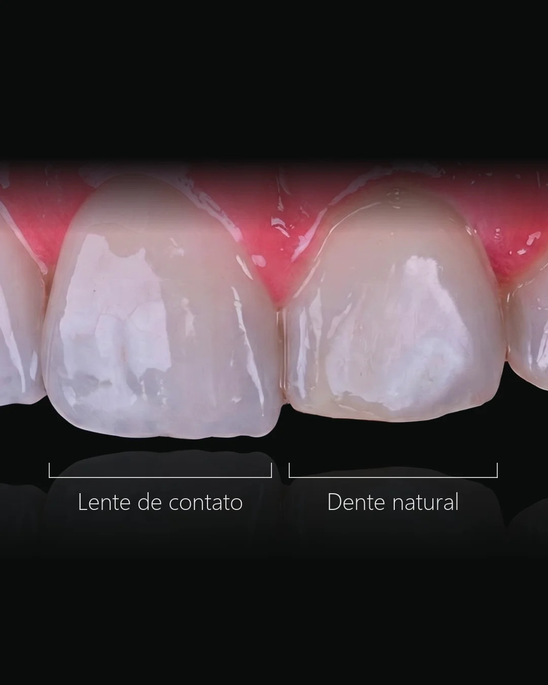
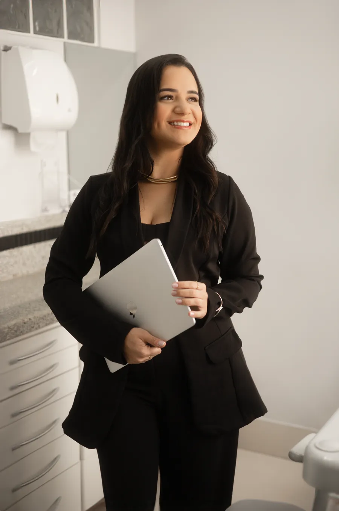
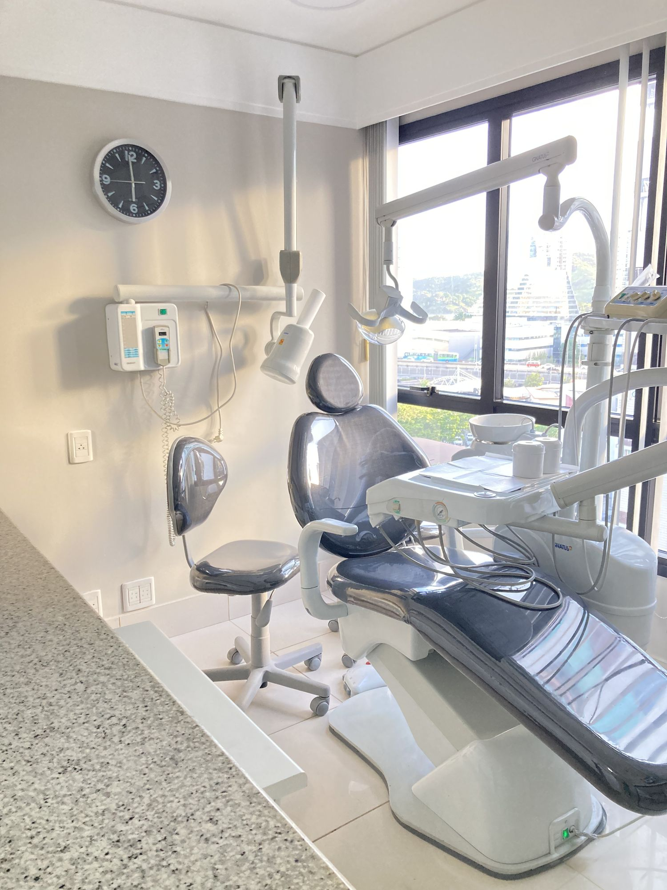

Lentes de contato dental.
Planejadas e feitas pela Dra. Karine Marinho Ribeiro, CRO-ES 10983.
5,0 · 54 avaliações no GoogleLente ou faceta?
A Dra. Karine explica a diferença antes de você decidir.
Por dentro do sorriso.
O esmalte é preservado no que for possível. A porcelana cobre a face do dente, planejada dente a dente.²

A cor certa.
Na avaliação, analisamos cor e formato dos seus dentes para definir a lente ideal para o seu caso.³
Planejado na tela antes de tocar no dente.
Escaneamento digital e plano por escrito.
Agende sua avaliação com a Dra. Karine ›
5,0
no Google
54
avaliações
Enseada do Suá. Sala 901.
R. José Alexandre Buaiz, 160, Ed. London Office Tower, Vitória-ES.
Como chegar ›
Perguntas frequentes.
Qual a diferença entre faceta e lente de contato dental?
Ambas são lâminas de porcelana aplicadas sobre os dentes. A lente de contato dental é, em geral, mais fina e indicada para ajustes mais sutis; a faceta tem um pouco mais de espessura e pode cobrir alterações maiores de cor e forma. A escolha depende do seu caso, definida na avaliação.
As facetas ficam com aparência natural?
O planejamento busca harmonia com o seu rosto e com os demais dentes, respeitando proporções e cor. O objetivo é um resultado natural, definido em conjunto com você antes de iniciar.
Quanto tempo leva o tratamento?
Varia conforme o número de dentes e a complexidade do caso. Em geral, é concluído em poucas consultas após o planejamento. A previsão é apresentada na avaliação.
O preparo para a faceta remove muita estrutura do dente?
O preparo é conservador: medido em décimos de milímetro e em geral restrito ao esmalte. Em casos selecionados, a lente ultrafina pede preparo mínimo ou nenhum. A quantidade prevista para cada dente é apresentada no planejamento digital, antes de qualquer etapa do preparo.
As facetas duram quanto tempo?
Os acompanhamentos de longo prazo descrevem uma faixa de 10 a 15 anos para facetas de porcelana bem indicadas e bem cuidadas, com casos que seguem estáveis além disso. Não existe prazo fixo: a durabilidade depende do preparo, da cimentação, da mordida e dos hábitos do dia a dia, além das revisões periódicas.